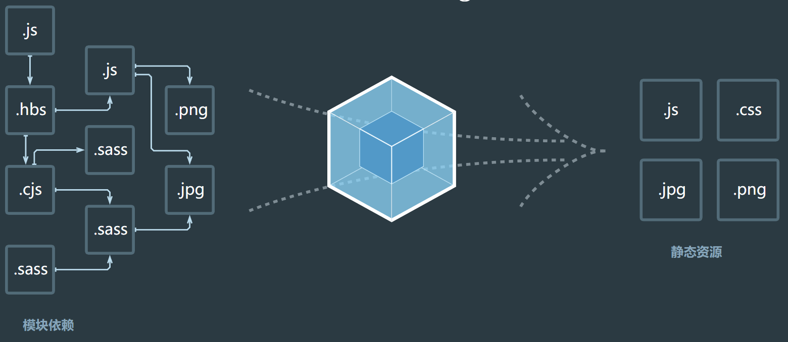

什么是前端工程化、模块化、组件化？
前端工程化
工程化是一种思想而不是某种技术(当然为了实现工程化我们会用一些技术)
再用一句通俗的话来概括前端工程化:前端工程化就是用做工程的思维看待和开发自己的项目,而不再是直接撸起袖子一个页面一个页面开写。
webpack
开发时，我们会使用框架（React、Vue），ES6 模块化语法，Less/Sass 等 css 预处理器等语法进行开发。
这样的代码要想在浏览器运行必须经过编译成浏览器能识别的 JS、Css 等语法，才能运行。
所以我们需要打包工具帮我们做完这些事。
除此之外，打包工具还能压缩代码、做兼容性处理、提升代码性能等。
目前市面上最流量的是 Webpack，所以我们主要以 Webpack 来介绍使用打包工具
基本使用
Webpack 是一个静态资源打包工具。
它会以一个或多个文件作为打包的入口，将我们整个项目所有文件编译组合成一个或多个文件输出出去。
输出的文件就是编译好的文件，就可以在浏览器段运行了。
我们将 Webpack 输出的文件叫做 bundle。

功能介绍
Webpack 本身功能是有限的:
开发模式：仅能编译 JS 中的 ES Module 语法
生产模式：能编译 JS 中的 ES Module 语法，还能压缩 JS 代码
开始使用
- 资源目录
1 | webpack_code # 项目根目录（所有指令必须在这个目录运行） |
- 创建文件
count.js
1 | export default function count(x, y) { |
sum.js
1 | export default function sum(...args) { |
main.js
1 | import count from "./js/count"; |
- 下载依赖
打开终端，来到项目根目录。运行以下指令：
- 初始化package.json
1 | npm init -y |
此时会生成一个基础的 package.json 文件。
需要注意的是 package.json 中 name 字段不能叫做 webpack, 否则下一步会报错
- 下载依赖
1 | npm i webpack webpack-cli -D |
- 启用 Webpack
开发模式
1 | npx webpack ./src/main.js --mode=development |
生产模式
1 | npx webpack ./src/main.js --mode=production |
npx webpack: 是用来运行本地安装 Webpack 包的。
./src/main.js: 指定 Webpack 从 main.js 文件开始打包，不但会打包 main.js，还会将其依赖也一起打包进来。
--mode=xxx: 指定模式（环境）。
- 观察输出文件
默认 Webpack 会将文件打包输出到 dist 目录下，我们查看 dist 目录下文件情况就好了
小结
Webpack 本身功能比较少，只能处理 js 资源，一旦遇到 css 等其他资源就会报错。
所以我们学习 Webpack，就是主要学习如何处理其他资源。
基本配置
在开始使用 Webpack 之前，我们需要对 Webpack 的配置有一定的认识。
5 大核心概念
entry（入口）
指示 Webpack 从哪个文件开始打包
output（输出）
指示 Webpack 打包完的文件输出到哪里去，如何命名等
loader（加载器）
webpack 本身只能处理 js、json 等资源，其他资源需要借助 loader，Webpack 才能解析
plugins（插件）
扩展 Webpack 的功能
mode（模式）
主要由两种模式：
开发模式：development
生产模式：production
准备 Webpack 配置文件
在项目根目录下新建文件：webpack.config.js
1 | module.exports = { |
Webpack 是基于 Node.js 运行的，所以采用 Common.js 模块化规范
修改配置文件
- 配置文件
1 | // Node.js的核心模块，专门用来处理文件路径 |
- 运行指令
1 | npx webpack |
此时功能和之前一样，也不能处理样式资源。
需要配置loader解析资源
1 | const path = require("path"); |
小结
Webpack 将来都通过 webpack.config.js 文件进行配置，来增强 Webpack 的功能
webpack打包流程
1）webpack 从项目的 entry入口文件开始递归分析，调用所有配置的 loader对模块进行编译
因为 webpack 默认只能识别 js 代码，所以如 css 文件、.vue 结尾的文件，必须要通过对应的 loader 解析成 js 代码后，webpack 才能识别
2）利用 babel(babylon)将 js 代码转化为 ast抽象语法树，然后通过 babel-traverse对 ast 进行遍历
3）遍历的目的找到文件的 import引用节点
因为现在我们引入文件都是通过 import 的方式引入，所以找到了 import 节点，就找到了文件的依赖关系
4）同时每个模块生成一个唯一的 id，并将解析过的 模块缓存起来，如果其他地方也引入该模块，就无需重新解析，最后根据依赖关系生成依赖图谱
5）递归遍历所有依赖图谱的模块，组装成一个个包含多个模块的 Chunk(块)
6）最后将生成的文件输出到 output 的目录中
前端模块化
前端工程化是一个高层次的思想,而模块化和组件化是为工程化思想下相对较具体的开发方式,因此可以简单的认为模块化和组件化是工程化的表现形式。
模块化开发，一个模块就是一个实现特定功能的文件，有了模块我们就可以更方便的使用别人的代码，要用什么功能就加载什么模块。
模块化开发的4点好处：
- 避免变量污染，命名冲突
- 提高代码复用率
- 提高维护性
- 依赖关系的管理
那具体什么是模块化呢？还是举简单的例子,我们要写一个实现A功能的JS代码,这个功能在项目其他位置也需要用到,那么我们就可以把这个功能看成一个模块采用一定的方式进行模块化编写,既能实现复用还可以分而治之,同理在写样式的时候,如果我们需要某种特殊的样式,会在很多地方应用,那么我们也可以采用一定的方式进行CSS的模块化,具体说来,JS模块化方案很多有AMD/CommonJS/UMD/ES6 Module等,CSS模块化开发大多是在less、sass、stylus等预处理器的import/mixin特性支持下实现的
总体而言,模块化不难理解,重点是要学习相关的技术并且灵活运用。
前端组件化
组件化也是工程化的表现形式。
①页面上的每个独立的、可视/可交互区域视为一个组件;
②每个组件对应一个工程目录,组件所需的各种资源都在这个目录下就近维护;
③由于组件具有独立性,因此组件与组件之间可以 自由组合;
④页面只不过是组件的容器,负责组合组件形成功能完整的界面;
⑤当不需要某个组件,或者想要替换组件时,可以整个目录删除/替换。
组件化将页面视为一个容器,页面上各个独立部分例如:头部、导航、焦点图、侧边栏、底部等视为独立组件,不同的页面根据内容的需要,去盛放相关组件即可组成完整的页面。
PS: 模块化和组件化一个最直接的好处就是复用,同时我们也应该有一个理念,模块化和组件化除了复用之外还有就是分治,我们能够在不影响其他代码的情况下按需修改某一独立的模块或是组件,因此很多地方我们及时没有很强烈的复用需要也可以根据分治需求进行模块化或组件化开发。